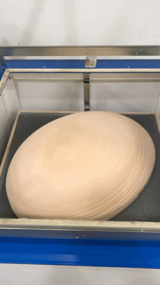
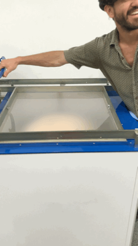
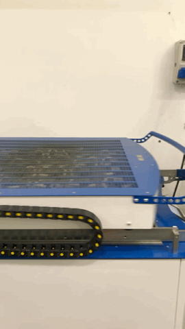

USE ANY TECHNIQUE NON-USED BEFORE
FIRTS THE MODEL
CUTTING IN THE CNC MACHINE ANY SHAPE YOU WANT
This is part of the installation / artifact for the Festival.
VACUUM MACHINE AT ELISAVA SCHOOL
MATERIAL AND TIME
I have to cut at Elisava due to the size of the mold.
The material was POLIESTILENO 1.2mm
PROCESS
  
RESULT
It broke two days before probably due to the weight and because I didn´t want to take it off to try to protect the piece.